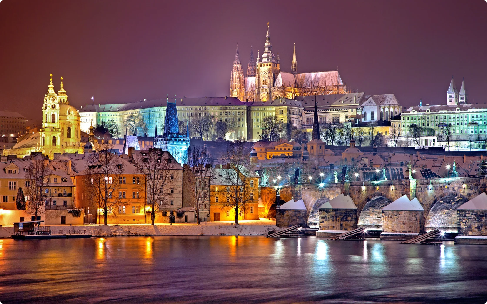

Дата та місце народження: 19 січня 2007 року, смт. Клавдієво-Тарасове
Освіта:
Коцюбинський ліцей №1, смт. Коцюбинське;
Політехнічний ліцей НТУУ "КПІ", м. Київ;
НТУУ "КПІ", м. Київ
Хобі:
Улюблені фільми:
Пра́га (чеськ. Praha, нім. Prag, лат. Praga) - столиця та найбільше місто Чехії, адміністративний центр Середньочеського краю та Праги як окремого регіону, а також двох районів Середньочеського краю Прага-Захід та Прага-Схід. Прага розташована в західній частині Чехії, в історичній області Богемія.
